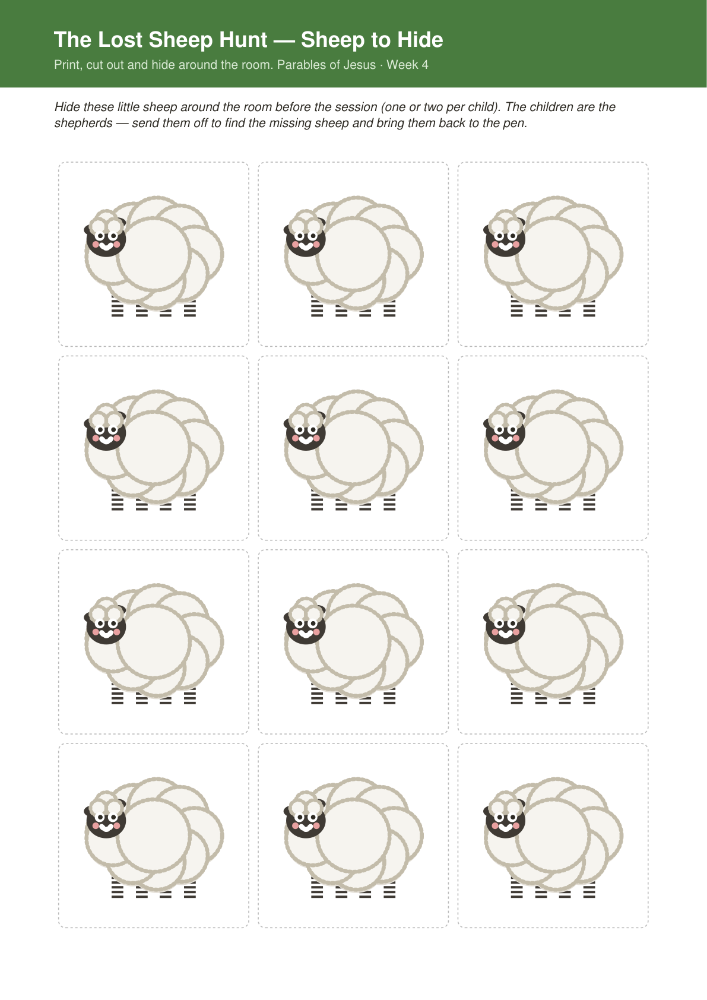
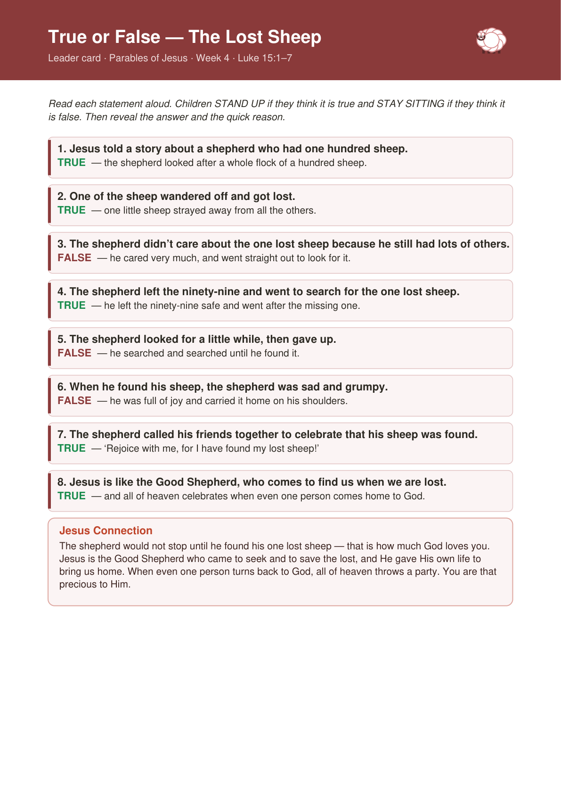
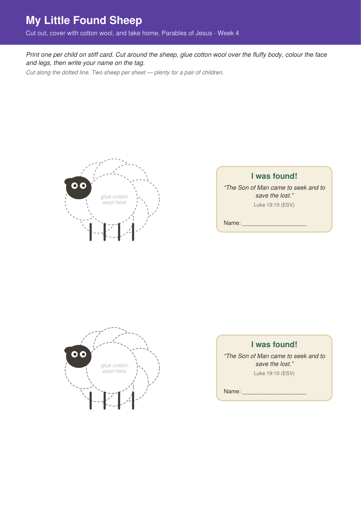
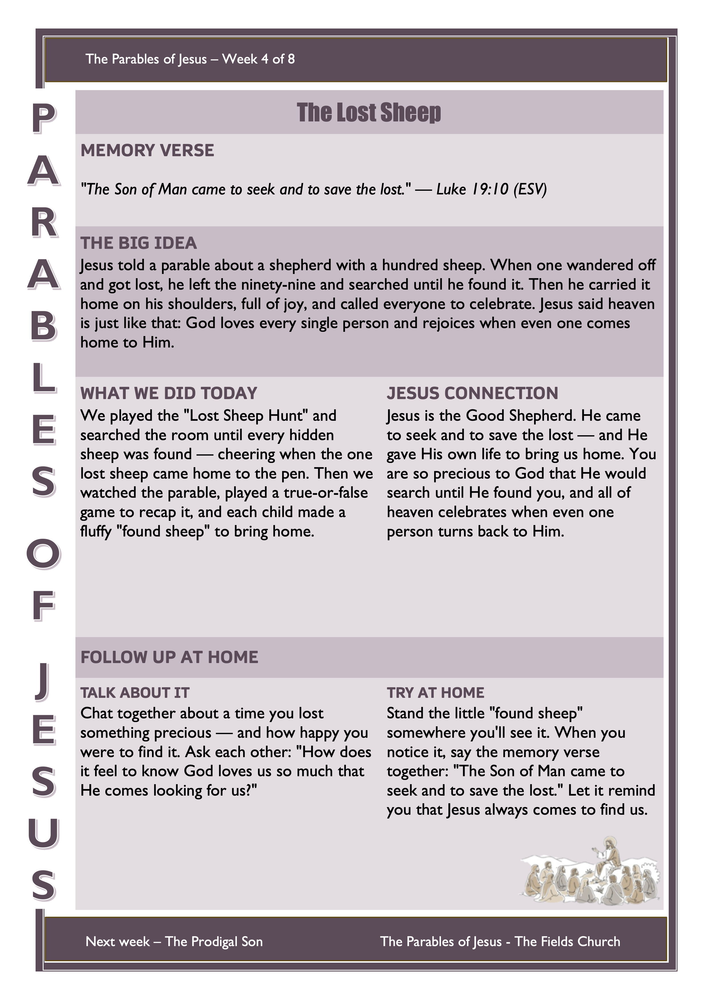

Welcome back! So far we’ve met the farmer scattering seed (and how God wants His word to grow deep roots in us), the wise and foolish builders (building our lives on Jesus, our rock), and the tiny mustard seed (how God grows big things from small beginnings). This week Jesus tells a parable about a shepherd who loses just one sheep — and how far he goes to find it. Get the children thinking about losing something precious before the story begins.
An active hide-and-seek before the story. The children become the shepherds, hunting all around the room for the little sheep that have wandered off — and cheering when the one special “lost sheep” is found and carried home to the pen. That celebration sets up the whole parable we’re about to hear.
Before the Session
- Print and cut out the paper sheep (below) and hide them around the room — one or two per child. Tuck them behind chairs, under cushions, on windowsills.
- Hide the one special golden “lost sheep” a little harder than the rest.
- Set the sheep pen sign on a box or in a corner — this is where found sheep come home.
- Have the Good and Faithful Shepherd song (below) ready as the search music.
How to Play
- Explain: “A shepherd has lost his sheep! You are the shepherds — go and find every one, and bring them safely to the pen.”
- Start the music and let the children hunt for the hidden sheep around the room.
- Each time a child finds a sheep, they carry it back and add it to the pen.
- The big moment is the one golden lost sheep — when it’s found, everyone cheers and celebrates together: “The lost sheep is found!”
Sheep to Hide + Pen Sign
A page of little sheep to cut out and hide, plus the special golden lost sheep and a “Sheep Pen” sign. Print on paper or light card and cut them out.

Bible passage: Luke 15:1–7 (also Matthew 18:10–14)
Watch the video together, then play the true-or-false recap below.
▶︎ Watch the Bible Story VideoTrue or False – Stand Up / Stay Sitting
Read out a statement about the story: children stand up if they think it’s true and stay sitting if they think it’s false. After each one, reveal the answer and say the quick reason.
Printable leader card — all the statements, answers, and the Jesus Connection to finish on:

Jesus Connection: The shepherd wouldn’t stop until he found his one lost sheep — that’s how much God loves you. Jesus is the Good Shepherd who came to seek and to save the lost, and He gave His own life to bring us home. You are so precious to God that He would search until He found you — and when even one person turns back to Him, all of heaven throws a party. So you never need to feel too small or too far away: the Good Shepherd is always coming to find you.
🙏 Prayer
Dear God, thank You that You are the Good Shepherd who never gives up on us. Thank You that You love every single one of us, and that You came to seek and to save the lost. When we wander, help us to hear Your voice and come home to You. Thank You that all of heaven celebrates when even one of us turns back to You. Thank You for Jesus. Amen.
Each child makes a fluffy cotton-wool sheep to take home, with the memory verse on a little tag — a soft reminder that Jesus, the Good Shepherd, came to find us.
Before the Session
- Print the sheep template (below) onto stiff card, one per child, and cut them out (or let older children cut their own).
- Pull a bag of cotton wool balls apart into fluffy pieces so they’re ready to glue.
- Set out glue sticks or PVA, and coloured markers for the face and legs.
Materials (per child)
- One printed “Found Sheep” template on stiff card
- A handful of cotton wool balls
- A glue stick or PVA
- Coloured markers
Steps
- Glue cotton wool all over the sheep’s fluffy body until it’s nice and woolly.
- Colour in the sheep’s face and legs with the markers.
- Write your name on the memory-verse tag.
- Say the memory verse together while everyone finishes: “The Son of Man came to seek and to save the lost.”
- Take your little found sheep home and stand it somewhere you’ll see it — a reminder that the Good Shepherd came to find you.
“Found Sheep” Template & Verse Tags
Print on stiff card, one per child (or one sheet makes two). Cut around the sheep, glue on cotton wool, and fill in the name tag.

Print one per child to send home. Preview below — use the button to download the printable sheet.
